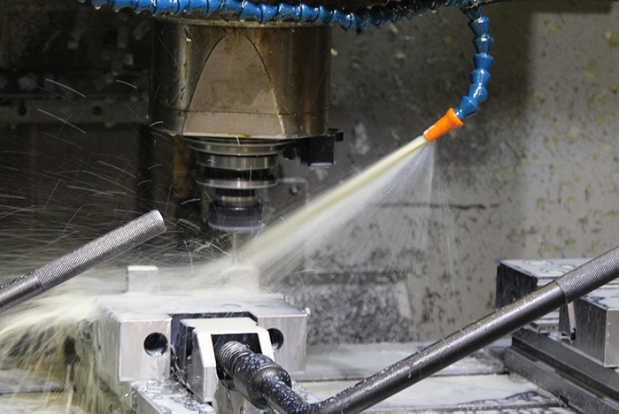

Fræsning
Hos BT’s maskinfabrik tilbyder vi CNC-fræsede emner efter dine ønsker. Vores mål er at producere og levere højkvalitets emner i alle former og størrelser. Med et erfarent team til at betjene de automatiserede maskiner kan selv de mest komplicerede opgaver løses. Ved at gøre brug af CNC-Fræsemaskiner sikre vi en effektiv, hurtig og fleksibel produktion. også når det haster
Fræsekompetencer
Ved at gøre brug af CNC-fræsemaskiner sikre vi en effektiv, hurtig og fleksibel produktion også når det haster-
BRIDGEPORT VMC 1000 22
PLAN 1000X500X500 / VKT 22 / OMDR. 6000 -
BRIDGEPORT VMC 1000 30
PLAN 1000X500X500 / VKT 30 / OMDR. 6000 -
BRIDGEPORT VMC 1000 P3
PLAN 1000X500X500 / VKT 20 / OMDR. 8000 -
HARTFORD VMC 1270
PLAN 1200X630X650 / VKT 30 / OMDR. 6000 - SE VORES KOMPLETTE MASKINLISTE HER